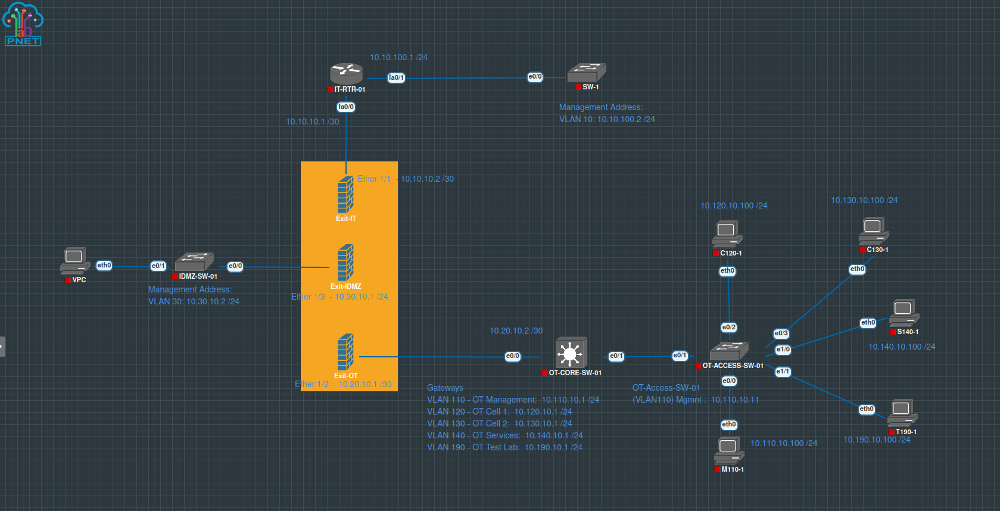
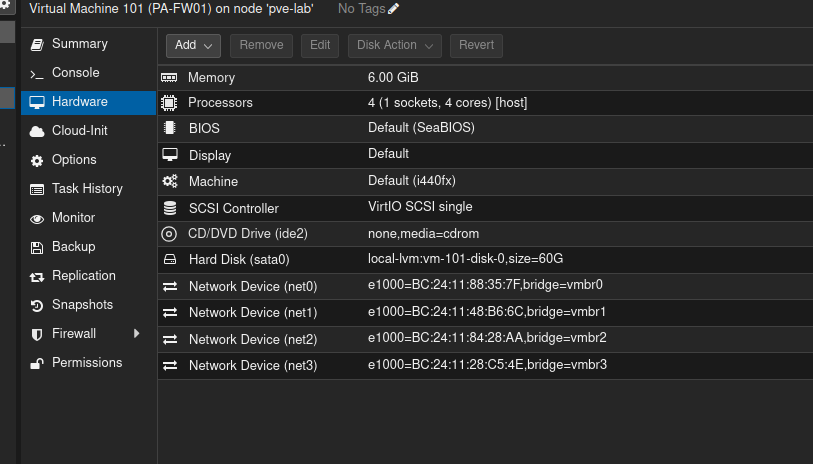
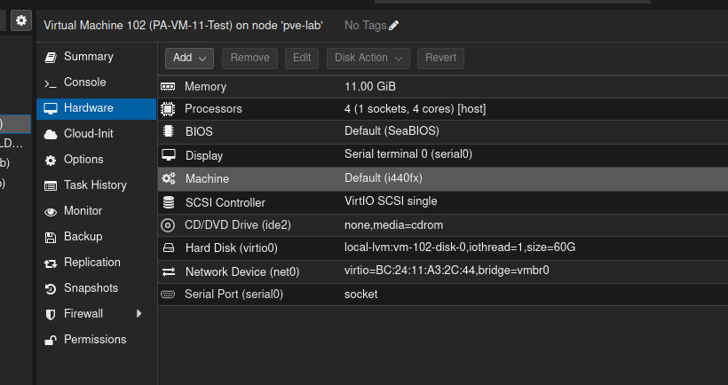
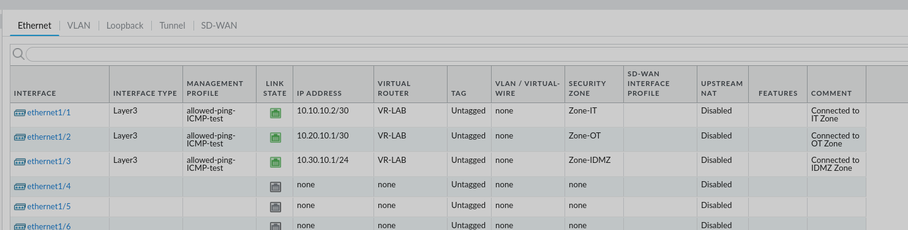
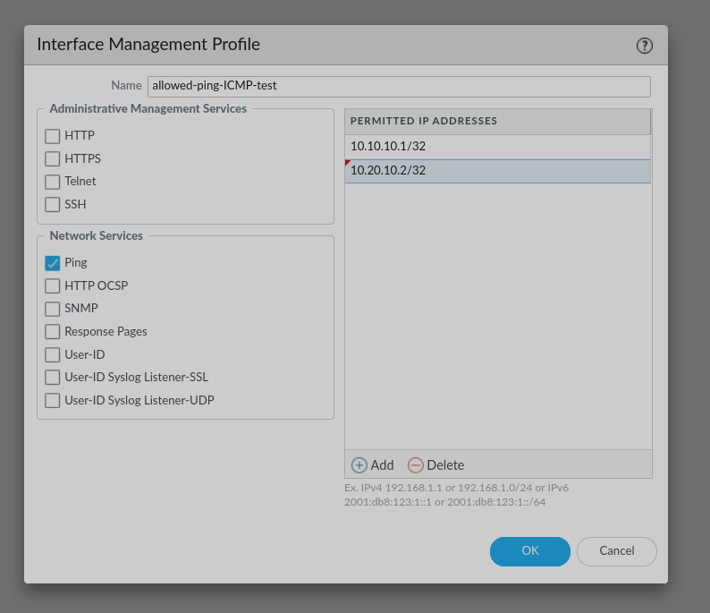
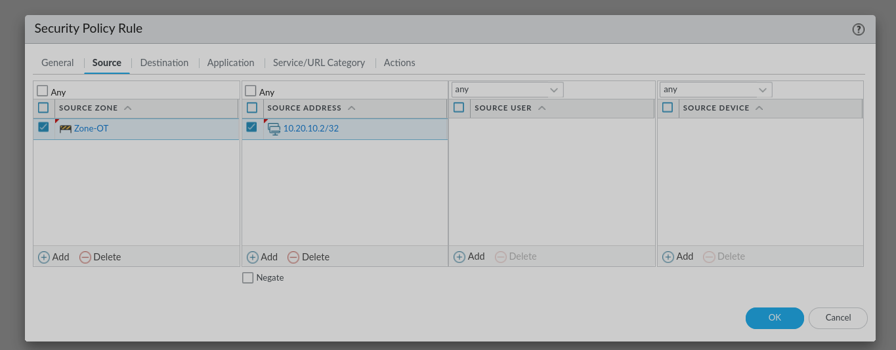
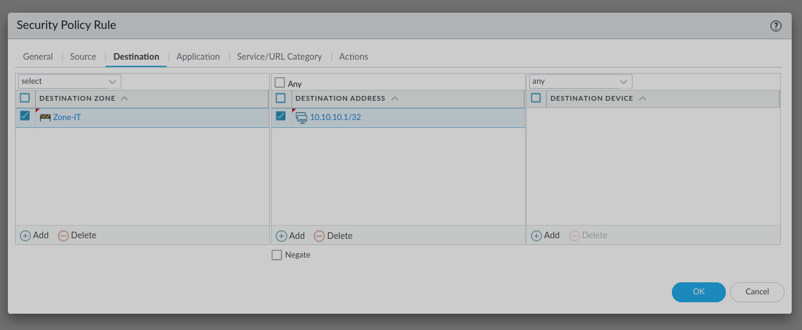
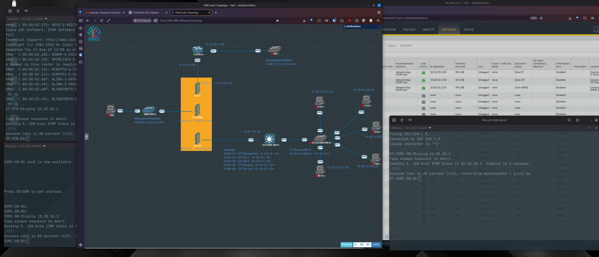

Part 2 · Data-plane integration
Scope and outcome
The earlier deployment guide ends with a working PAN-OS management interface and a clean snapshot. This article deliberately starts at that checkpoint. It documents a different engineering problem: turning the standalone appliance into the routed security boundary for a working OT lab.
Three Layer 3 interfaces reached an operational state, the neighbouring IT router, OT core, and IDMZ switch reached their firewall addresses, and the PA-VM was ready for controlled inter-zone policy tests.
Architecture
Topology and addressing
The Palo Alto is the inter-zone control point. The OT core retains the gateways for the operational VLANs, while a routed /30 transit carries traffic to the firewall. The IT router performs the same adjacent-router role on the enterprise side.

| PA interface | Address | Zone | Adjacent device |
|---|---|---|---|
ethernet1/1 | 10.10.10.2/30 | Zone-IT | IT router 10.10.10.1 |
ethernet1/2 | 10.20.10.1/30 | Zone-OT | OT core 10.20.10.2 |
ethernet1/3 | 10.30.10.1/24 | Zone-IDMZ | IDMZ switch 10.30.10.2 |
Stage 1
Attach the PA-VM to the existing Proxmox bridges
The original VM 101 supplied a known-good reference. Its hardware view showed one management adapter and three data adapters, each assigned to a separate Proxmox bridge.

The replacement VM 102 initially had only net0 on vmbr0. PAN-OS displayed its Ethernet interfaces, but no backing virtual adapters existed, so the data-plane links remained down.

| Proxmox NIC | Bridge | PAN-OS mapping | Purpose |
|---|---|---|---|
net0 | vmbr0 | Management | Administrative access |
net1 | vmbr1 | ethernet1/1 | IT |
net2 | vmbr2 | ethernet1/2 | OT |
net3 | vmbr3 | ethernet1/3 | IDMZ |
No new Linux bridges were required. With VM 102 shut down, three E1000 network devices were added and attached to the existing bridges. MAC-address comparison provides a reliable way to confirm interface order when adapter numbering is uncertain.
Duplicate-address control
VM 101 remained powered off while VM 102 used the established interface addresses. The IT and OT transit networks are /30 links with both usable addresses already occupied, so two independent active firewalls cannot share them without redesign.
Stage 2
Build the PAN-OS data plane
Three Layer 3 zones—Zone-IT, Zone-OT, and Zone-IDMZ—were created first. A virtual router named VR-LAB was then created and assigned all three Ethernet interfaces.
Each interface received its address, virtual router, zone, and a descriptive comment. After the configuration commit and activation of the adjacent devices, all three physical link indicators became green.

VR-LAB and their intended zones.The distinction between these objects is important: an address provides Layer 3 identity, the virtual router supplies forwarding decisions, and the zone supplies the boundary used by Security Policy.
Stage 3
Permit only controlled interface testing
An Interface Management Profile was created with only Ping enabled. The permitted entries identify the source systems allowed to ping the firewall interfaces; they are not the PA-VM destination addresses.
- IT router:
10.10.10.1/32 - OT core:
10.20.10.2/32 - IDMZ switch:
10.30.10.2/32

/32 entries limit the temporary test to named adjacent devices.A packet sent to a PA interface is controlled by this profile. A packet forwarded through the firewall is instead evaluated by Security Policy. Keeping those two paths separate prevents misleading test results.
Stage 4
Install forward and return routes
PAN-OS automatically installs connected routes for the three interface networks. Static routes were required only for destinations beyond the adjacent routers.
IT management route
Destination: 10.10.100.0/24
Interface: ethernet1/1
Next hop: 10.10.10.1OT VLAN routes
The following networks use ethernet1/2 and next hop 10.20.10.2:
10.110.10.0/24— OT management10.120.10.0/24— OT Cell 110.130.10.0/24— OT Cell 210.140.10.0/24— OT services10.190.10.0/24— OT test lab
The next hop is the adjacent Layer 3 device that can move the packet closer to the destination—not the firewall's own address. Return routing is equally important: the IT router points OT and IDMZ networks toward 10.10.10.2, while the OT core points IT and IDMZ networks toward 10.20.10.1.
Stage 5
Start with an explicit temporary policy
The first transit test used specific host addresses rather than an unrestricted rule:
Source zone: Zone-OT
Source address: 10.20.10.2/32
Destination zone: Zone-IT
Destination address: 10.10.10.1/32
Application: ping
Service: application-default
Action: allow
Logging: session end

This rule does not permit an OT endpoint such as 10.120.10.100. Endpoint validation should use a separate rule with that host as its explicit source. NAT is unnecessary for routing between these internal private lab networks.
Stage 6
Validate in layers
- Confirm the Proxmox adapters and bridge assignments.
- Confirm the neighbouring router and switch ports are enabled.
- Confirm all three PAN-OS links are green.
- Ping each firewall interface from its directly connected neighbour.
- Test the remote IT and OT networks after checking both forward and return routes.
- Generate one authorised and one deliberately unauthorised inter-zone flow.
- Use Monitor → Traffic to confirm the matching allow or deny rule.

The first ICMP request may be lost while ARP resolves the destination MAC address. Four replies from five immediately after a link comes up can therefore indicate successful connectivity rather than persistent loss.
Engineering reflection
Lessons learned
Check the hypervisor before PAN-OS
A configured interface remains down when the VM has no corresponding virtual adapter.
Trace every abstraction
The full path is PAN-OS interface → Proxmox NIC → Linux bridge → PNETLab adapter → cloud network → emulated device.
Separate interface access from transit policy
Management profiles protect the firewall itself; Security Policy controls traffic forwarded between zones.
Prove the return path
A correct forward route cannot compensate for a missing route on the destination side.
The final configuration creates a repeatable boundary for future OT tests. More advanced work can now focus on application-aware rules, industrial protocol visibility, threat profiles, and controlled IT-to-OT service flows without rebuilding the underlying connectivity.
Continue the series
From appliance deployment to validated segmentation.
Read the installation guide first, then continue to the evidence-led OT-to-IDMZ policy validation.